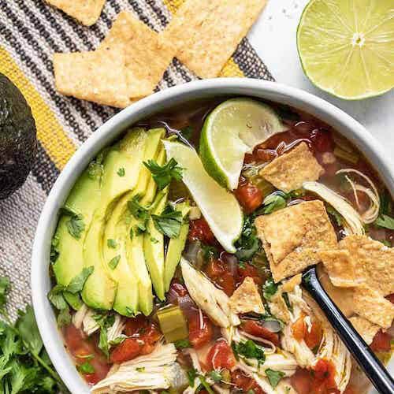

Lemon Poppy Seed Scones
30 mins
$2.71 recipe
Ingredients
- 1 fresh lemon ($0.30)
- 1.25 cups all-purpose flour ($0.13)
- 1/2 tsp salt ($0.02)
- 3/4 cup powdered sugar, divided ($0.15)
- 2 tsp baking powder ($0.08)
- 2 tsp poppy seeds ($0.20)
- 1 cup heavy whipping cream ($1.83)
Instructions
- Preheat the oven to 400ºF. Line a baking sheet with parchment. Use a small-holed cheese grater or a zester to remove the zest from the lemon, then squeeze the juice into a separate bowl. You'll need about 1 tsp of zest and 1 Tbsp juice.
- In a large bowl, stir together the flour, salt, 1/4 cup powdered sugar, baking powder, poppy seeds,and 1 tsp lemon zest. Make sure these ingredients are well combined.
- Stir the cream into the dry ingredients until a shaggy ball of dough forms. The dough will be fairly sticky. Turn the dough out onto a floured surface, divide it into three pieces, and shape each piece into a disc (about 3 inches diameter). Cut each disc into six triangles.
- Arrange the cut scones on the prepared baking sheet. Bake the scones for about 15 minutes, or until they just begin to barely turn golden brown on top.
- While the scones are baking, place the remaining 1/2 cup powdered sugar in a bowl. Stir in about 1 Tbsp lemon juice, or just enough to form a thick glaze.
- When the scones have baked, remove them from the oven, let them cool, then drizzle with the prepared lemon glaze.

Sesame Slaw
20 mins
$5.08 recipe
Ingredients
Sesame Dressing
- 2 Tbsp neutral salad oil* ($0.04)
- 1 Tbsp rice vinegar ($0.12)
- 3 Tbsp soy sauce ($0.39)
- 1/2 Tbsp toasted sesame oil ($0.16)
- 1.5 Tbsp brown sugar ($0.03)
- 1 tsp grated fresh ginger ($0.04)
- 1/2 Tbsp sesame seeds ($0.04)
Slaw
- 6 cups shredded red cabbage ($1.09)
- 1 large carrot ($0.11)
- 1 red bell pepper ($1.89)
- 1/2 bunch green onion ($0.50)
- 1 cup frozen shelled edamame ($0.67)
Instructions
- Prepare the dressing first to allow the flavors time to blend. Place the neutral oil, vinegar, soy sauce, toasted sesame oil, brown sugar, ginger, and sesame seeds in a jar or other small container with a lid, and shake until combined. Set the dressing aside.
- Shred the cabbage as finely as possible. Use a large-holed cheese grater, mandolin, or food processor to shred the carrot. Finely dice the bell pepper, and slice the green onion. Cook the edamame according to the package directions (mine required microwaving for 5 minutes).
- Place all the vegetables in a large bowl and pour about half the dressing over top. Toss the ingredients together until everything is combined and coated in dressing. Taste and add more dressing if desired (I used about 3/4 of the dressing). Serve immediately or refrigerate until you're ready to eat. Always stir the slaw just before serving to redistribute the dressing.
Notes
*Neutral salad oils do not have a strong flavor, and are a great base for dressing to allow other flavors to shine. Oils like canola, grapeseed oil, light olive oil, or safflower oil.

Eggs Florentine Breakfast Pizza
30 mins
$2.86 recipe
Ingredients
White Sauce
- 1 Tbsp butter ($0.09)
- 1 Tbsp all-purpose flour ($0.01)
- 1 cup whole milk ($0.31)
- 1/8 tsp garlic powder ($0.02)
- 1/4 tsp salt ($0.01)
Pizza
- 1/2 batch Thin and Crispy Pizza Crust* ($0.30)
- 1/4 lb. frozen spinach, thawed (about 1 to 1.5 cups) ($0.43)
- 1 cup shredded mozzarella ($0.63)
- 4 large eggs ($1.03)
- Freshly cracked pepper ($0.02)
- 1/2 Tbsp cornmeal (for pizza pan--optional) ($0.02)
Instructions
- Adjust your oven rack to the highest level. Begin to preheat the oven to 500 degrees.
- To make the white sauce, combine the butter and flour in a small sauce pot. Heat the butter and flour over medium-low heat, while whisking, until it begins to simmer. Simmer and whisk the mixture for about one minute.
- Whisk the milk into the butter and flour mixture. Allow it to come up to a simmer again, whisking often. When it reaches a simmer, it will thicken. Turn off the heat and whisk in the garlic and salt. Set the sauce aside to cool (it will thicken further as it cools).
- Prepare a 12-inch pizza pan with non-stick spray and/or cornmeal. Stretch the pizza dough out to cover the surface of the pizza pan. Pour the white sauce over the surface and spread it out with the back of a spoon. Bake the crust with the sauce for 5 minutes.
- Squeeze any excess moisture out of the spinach, then sprinkle the spinach over the surface of the par-baked pizza crust and sauce, followed by half of the mozzarella. Crack the four eggs onto the pizza, equally spaced around the surface. Add a small amount of freshly cracked pepper, then top the remainder of the mozzarella.
- Bake the pizza for 10-12 minutes, or until the cheese and crust are golden brown and the eggs are mostly set. Allow the pizza to cool for five minutes before slicing (the eggs will continue to firm up after it comes out of the oven).
Notes
You can use any type of pizza crust you like, but cooking time may vary. The ingredients listed are enough for a 12-inch pizza.

Chicken & Lime Soup
1 hr 10 mins
$7.76 recipe
Ingredients
- 1 yellow onion ($0.21)
- 3 ribs celery (about 1/4 bunch) ($0.37)
- 1 jalapenño ($0.17)
- 4 cloves garlic ($0.32)
- 2 Tbsp olive oil ($0.32)
- 1 boneless, skinless chicken breast (about 3/4 lb.) ($2.32)
- 6 cups chicken broth* ($0.78)
- 2 10oz. cans diced tomatoes with green chiles (Rotel) ($0.90)
- 1 tsp oregano ($0.10)
- 1/2 Tbsp cumin ($0.15)
- 1 lime ($0.22)
- 1/2 bunch cilantro ($0.40)
- 1 avocado ($1.50)
Instructions
- Dice the onion, celery, and jalapeño (scrape the seeds out of the jalapeño before dicing). Mince the garlic. Add the onion, celery, jalapeño, garlic, and olive oil to a large soup pot and cook over medium heat for about 5 minutes, or until the onions are soft and translucent.
- Add the chicken breast, chicken broth, diced tomatoes with chiles (with juices), oregano, and cumin to the pot. Place a lid on the pot, turn the heat up to high, and bring the broth up to a boil. Once boiling, turn the heat down to low and let the pot simmer for 45 minutes.
- After simmering for 45 minutes, carefully remove the chicken breast from the pot and use two forks to shred the meat. Return the shredded meat to the pot. Squeeze the juice of one lime into the soup (2-3 Tbsp juice).
- Rinse the cilantro and then roughly chop the leaves. Add the chopped cilantro to the soup, give it a quick stir, then serve. Slice the avocado and add a few slices to each bowl.
Notes
*I use Better Than Bouillon chicken soup base to make my broth because it is less expensive than buying canned or boxed broths.